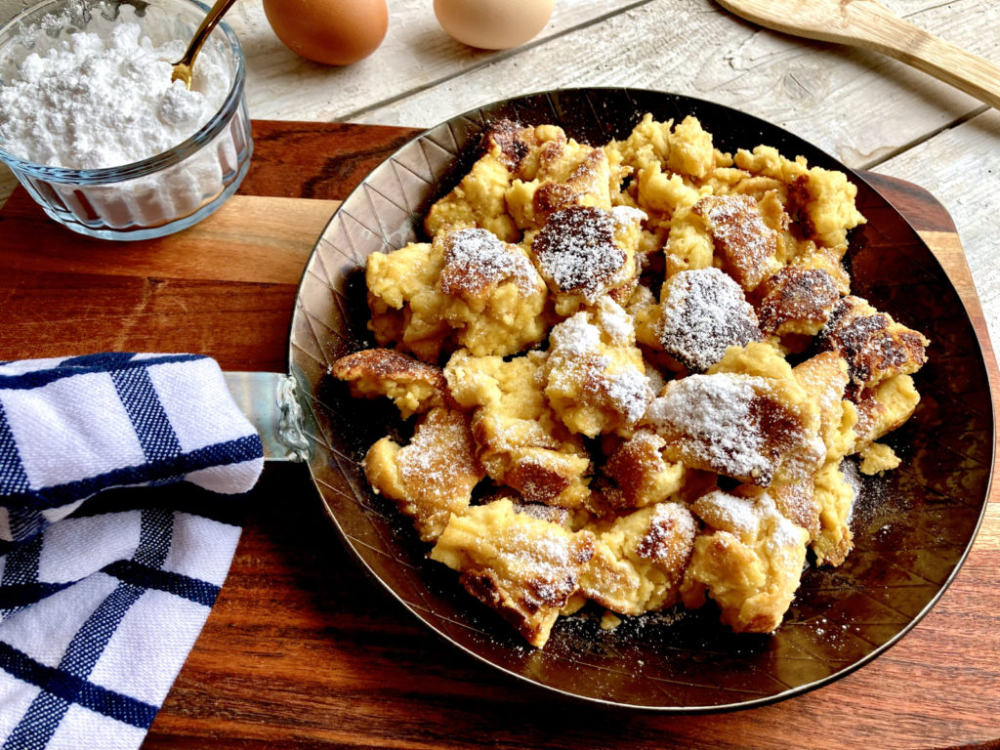

Kaiserschmarren (Chopped pancakes)

Description
Another famous austrian dish. Translated it is called emperor's pancakes and it is a sweet main dish.
Preparation time is about 45 min and it serves 4 people.
Ingredients
- 6 eggs
- 350 - 400 ml milk
- 200 g ground flour
- 3 tbsp crystal sugar, for the topping
- 2 tbsp raisins (optional)
- 1 packet vanilla sugar
- A dash of rum
- pinch of salt
- Approx. 50 g butter for frying
- Icing sugar and cinnamon for dusting
- Some grated lemon rind
Steps
- Separate the eggs and place the yolks in a mixing bowl. Pour in the milk, flavour with some grated lemon rind and vanilla sugar, and add the flour. Mix to form a smooth dough.
- Beat the egg whites with the crystal sugar and a small pinch of salt until it forms a firm peak, and fold into the dough mix. Pre-heat the oven to 180 °C.
- Let the butter melt and bubble up in one large, or two small (coated) heatproof dishes. Pour in the mixture and after 1–2 minutes, scatter the soaked raisins over the top. Cook the underside until light brown, turn over using a spatula and bake for 6–8 minutes in the pre-heated oven until golden brown. You can also cook it on the stovetop instead.
- Tear the ‘Schmarren’ into small pieces, using two forks. Scatter the butter shavings over the top, sprinkle with some crystal sugar, and caramelise under the grill at a high heat.
- Remove from the grill and arrange on pre-heated plates. Dust with icing sugar and cinnamon. Serve with baked plums, a berry ragout, or fruit compote. The Kaiserschmarren can also be cooked at the top of the oven and caramelised at the end with a lid to cover.
- Enjoy!